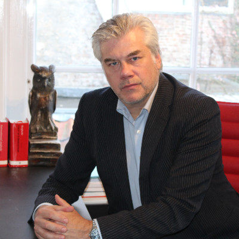

Slimmer werken met AI, binnen het beroepsgeheim
Een praktijkgerichte trainingsdag voor advocaten en juristen. Concreet tijd besparen op contracten, dossiers en correspondentie — hands-on met algemene AI-modellen én helder zicht op wanneer je juridische AI nodig hebt. Altijd binnen de grenzen van vertrouwelijkheid en verificatie.
De jurist én de technologie
De meeste juristen zien dat AI hun werk raakt, maar durven het niet te gebruiken — terecht, want vertrouwelijkheid en verificatie zijn geen bijzaak in dit vak. Deze training neemt die drempel weg: eerst een helder verhaal over wat je wél en niet mag met cliëntdata, daarna hands-on aan de slag met echte, geanonimiseerde vraagstukken uit jullie eigen praktijk.
We werken met een gemengde groep — advocaten én juristen, ook in overheidsdienst. De kaders doen we gezamenlijk; in twee groepsoefeningen ga je zelf aan de slag: 's ochtends met een casus buiten je eigen rechtsgebied, 's middags met je eigen geanonimiseerde casus. Zo ga je naar huis met werkende dingen, niet alleen met kennis.
Echte juridische casuïstiek
Arbeids-, huur-, familie-, straf- en bestuursrecht — vraagstukken uit de praktijk van het kantoor, niet generieke voorbeelden.
Tool-onafhankelijk leren
Welk werk doe je veilig in een algemeen AI-model — van kennisbank tot correspondentie — en voor welk werk heb je juridische AI met gevalideerde bronnen nodig.
Veilig binnen de beroepsregels
Beroepsgeheim, AVG en de AI Act vertaald naar concrete spelregels: wat mag wél, wat nooit, en met welke versie.
Eén dag — zeven netto contacturen
Twee dagdelen op één trainingsdag (± 9:00 – 17:30, inclusief lunch). De ochtend legt het fundament en de grenzen, de middag is volledig hands-on met je eigen casuïstiek. Twee edities: donderdag 24 september en donderdag 22 oktober 2026.
Fundament & grenzen
Opening: wat AI kan — en waar het misleidt
Korte geschiedenis van AI, en met eigen ogen zien hoe overtuigend AI kan manipuleren en hallucineren. Dat zet meteen de juiste reflex: nooit blind vertrouwen.
Waarom dit vak anders is
De vijf kernwaarden uit de NOvA-aanbevelingen als kapstok — onafhankelijkheid, partijdigheid, deskundigheid, integriteit en vertrouwelijkheid. Wat die aanbevelingen wél en niet zeggen, en waarom de eindverantwoordelijkheid altijd bij de advocaat of jurist blijft.
Hoe het werkt en waar het breekt
Live demo: dezelfde juridische vraag langs meerdere AI-modellen. Op de wet en de definitie zijn ze betrouwbaar, maar bij arresten en vindplaatsen lopen ze uiteen — soms met verzonnen arresten en foute ECLI's. Zo zie je zelf waarom een taalmodel geen databank is.
Vertrouwelijkheid, beroepsgeheim, AVG & AI Act Kernblok
Waarom de geheimhoudingsplicht van de advocaat breder en strenger is dan de AVG. Het verschil tussen een consumenten- en een zakelijke versie, de verwerkersovereenkomst, doorgifte naar de VS en bewaartermijnen — eerlijk verteld, zonder loze beloftes over datalocatie. Plus de AI Act op hoofdlijnen en de beslisboom: welke route past bij welk type dossier.
De cliënt en transparantie
Het toestemmingsadvies van de NOvA en een conceptclausule voor de opdrachtbevestiging, plus hoe je omgaat met stukken die de cliënt zelf met AI heeft gemaakt.
Groepsoefening 1: blanco casusonderzoek Hands-on
In groepjes aan de slag met een casus búiten je eigen rechtsgebied. Onderzoek langs meerdere AI-modellen, vindplaatsen zelf natrekken op rechtspraak.nl — en daarna de onthulling aan de hand van het gevalideerde antwoordblad: wat klopte er wel en niet?
Toepassen
Prompten als vakvaardigheid
Rol, context, taak en format — met de verificatiestap als vast onderdeel. Je bouwt een prompt stap voor stap op in plaats van in één lange opdracht, omdat dat informatie blootlegt die je anders zou missen.
Eigen kennisbank bouwen Kernblok
Een omgeving inrichten waar het model steeds op teruggrijpt: modellen, huisstijl en standaardclausules. Zo leer je precies welk type werk je veilig in een algemeen model doet — en welk werk juridische AI met gevalideerde bronnen vraagt.
Groepsoefening 2: je eigen casus Hands-on
Aan de slag met de geanonimiseerde casus die je zelf hebt meegenomen, gecombineerd met je kennisbank. De trainers lopen mee en sturen bij waar je vastloopt.
Het landschap: algemeen versus juridisch
Wanneer heb je een juridisch platform nodig, wat koop je er precies — gelicentieerde, gevalideerde bronnen met vindplaats — en welke vijf vragen stel je een leverancier voordat je tekent. Tool-onafhankelijk: de principes gelden ongeacht welke stack het kantoor kiest.
Van handwerk naar structuur
Een sorteeroefening: welk knelpunt los je op met een betere prompt, en welk knelpunt is een terugkerend proces dat om een andere oplossing vraagt. Wat zich leent voor automatisering komt zo vanzelf boven water.
Plenaire bespreking & afronding
De resultaten van de groepen langs: waar liep je vast, en had een andere vraag of een ander gereedschap je verder gebracht? Spelregelkaart invullen en je persoonlijke top drie vastleggen: drie taken die je vanaf morgen anders — en sneller — doet.
De rode draad: AI levert het concept, de advocaat blijft verantwoordelijk
We oefenen bewust met fictieve of geanonimiseerde casus — nooit met echte cliëntdata. Elk voorbeeld wordt inhoudelijk bewaakt, zodat het klopt en toepasbaar is in het echte werk van het kantoor.
Blok 1 en het prompt-blok versterken elkaar: het eerste toont wat er misgaat, het tweede hoe je het goed doet. Samen bouwen ze de kritische, verifiërende houding op die dit vak vraagt.
Meer dan alleen een training
Deelnamebewijs — 7 PO-punten voor advocaten
Deelnemende advocaten ontvangen een deelnamebewijs met het volledige programma en een urenspecificatie, waarmee je de opleidingspunten zelf registreert bij de Orde. Op grond van artikel 4.4 lid 5 van de Verordening op de advocatuur (VODA) staat één netto contactuur gelijk aan één punt. Bij zeven netto contacturen op één trainingsdag komt dat neer op 7 opleidingspunten (PO) — in één dag.
Spelregelkaart
Eén pagina met heldere afspraken over vertrouwelijkheid — een blijvend hulpmiddel voor het hele kantoor.
Persoonlijke top 3
Elke deelnemer gaat weg met drie taken die hij vanaf morgen anders — en sneller — doet.
Eigen kennisbank
Een ingerichte kennisbank in een algemeen AI-model, plus de keuzekaart: welk werk doe je hier, en welk werk vraagt juridische AI.
Prompt-bibliotheek
Uitgewerkte prompts per rechtsgebied, opgebouwd tijdens de hands-on, om later opnieuw te gebruiken.
Verificatie-reflex
Een concrete checklist tegen hallucinaties: nooit blind vertrouwen, altijd de bron natrekken.
Automatiseringskansen
Een gedeelde inventarisatie van processen die rijp zijn om te automatiseren, als basis voor een vervolg.
De advocaat & de bouwer

John Peters
Brengt de juridische diepgang: per rechtsgebied de praktijkcasuïstiek, de valkuilen en de tuchtrechtelijke kaders. John bewaakt dat elk voorbeeld klopt en toepasbaar is in het echte werk van het kantoor.

Sedat Ayar
Vertaalt de techniek naar de dagelijkse praktijk: hands-on met de grote AI-modellen, veilig werken met vertrouwelijke data en de brug naar het automatiseren van terugkerende processen.
Klaar om jullie praktijk te versnellen?
Schrijf je in en we stemmen samen de invulling, de casuïstiek en de planning af. Neem gerust rechtstreeks contact op of scan de QR-code voor de inschrijving.
Met het hele kantoor tegelijk? Een incompany-training op jullie eigen locatie is ook mogelijk — volledig toegespitst op jullie rechtsgebieden en processen. Vraag naar de mogelijkheden.
Peters Advocatuur × Forgexe — juridische AI-training op maat.